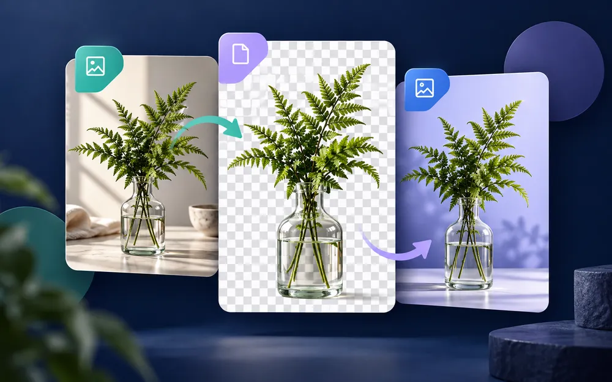
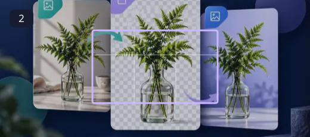
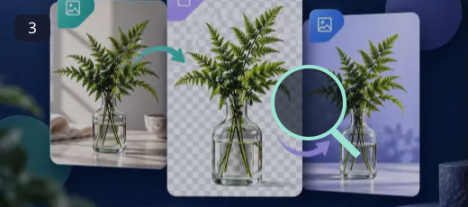
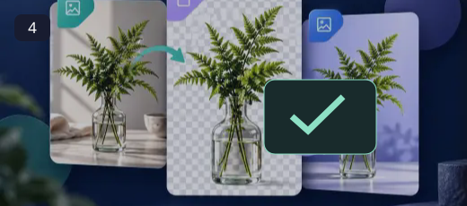

How to use the Image Converter
Convert images directly in your browser. The preview shows the original picture over a checkerboard transparency indicator, without adding a border or changing the image dimensions. Transparent pixels reveal the checkerboard in this preview but stay transparent in supported output formats.
Select the target format in the settings panel on desktop, or use the bottom Format button on mobile. Adjust quality where supported, check the estimated output size, then save your converted file.
View every control ↓Every tool and control explained
Choose a photo / New photo
Drag an image onto the upload area or select a file. Once the editor opens, use New photo to replace it. The original file stays untouched.

Format
Choose WebP, PNG, or JPG. WebP is suitable for small website images, PNG preserves transparency and graphics, and JPG is widely compatible for photos but removes transparency. BMP, ICO and GIF appear as options, but currently use a PNG fallback rather than true BMP, ICO or GIF encoding.

Quality slider
For JPG and WebP, move Compression Quality from 10% to 100%. Higher values generally preserve more detail at the cost of larger files. PNG is lossless, so its quality slider is disabled.

Info and Save
Info shows the filename, source format, source size, and an estimated output size. Save or Convert & Download Image produces a new file. On mobile, tap Format, Quality, Info or Save in the bottom toolbar.
What changes when converting?
- PNG: Good for screenshots, illustrations and transparent designs; lossless encoding.
- WebP: Good for web delivery; supports transparency and adjustable lossy compression.
- JPG: Good for regular photographs; does not support transparency, so transparent areas are flattened onto white.
- BMP, ICO and GIF: Not genuinely encoded by this browser-only converter yet. Choose PNG if you need a reliable file from these options, or use a dedicated converter for those formats.
Conversion does not automatically enlarge your image. Exported files may not preserve original metadata. Check the file before uploading it elsewhere.
Frequently asked questions
Why is the image shown on white?
The checkerboard is just the editor background to help identify transparency. It is never part of the saved file.
Will my PNG transparency disappear?
No when exporting to PNG or a WebP format that supports transparency. JPG cannot contain transparency and transparent areas become white in the output.
Why does the quality slider turn off for PNG?
PNG is exported losslessly by this tool. JPEG and WebP use adjustable quality settings.
Why is the new file bigger?
Lossless PNG can be larger than compressed JPG or WebP, depending on the original picture and its complexity. Review Live Output Size before saving.
Do ICO, BMP and GIF options produce real files in those formats?
Not yet. The current export uses PNG bytes as a fallback. Do not rely on a renamed filename as genuine ICO, BMP or GIF conversion.
Is my photo uploaded?
No. Image conversion takes place locally in your browser.